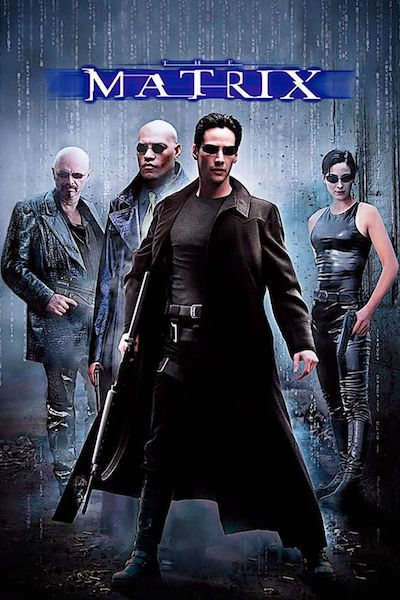
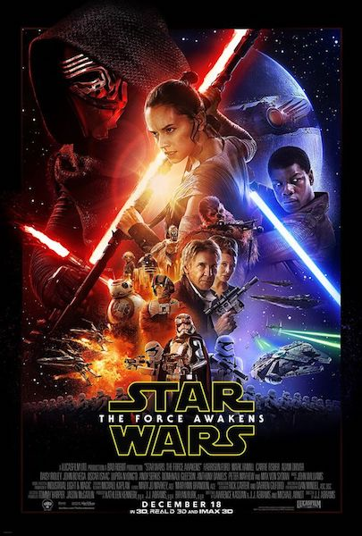
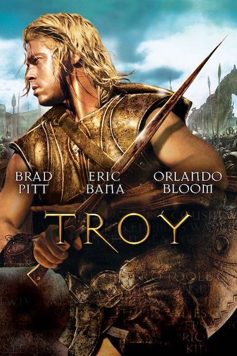

Hi Welcome to my landing page !


|  |
The MatrixThe Matrix is a 1999 science fiction action film written and directed by The Wachowskis, It depicts a dystopian future in which reality as perceived by most humans is actually a simulated reality called "the Matrix", created by sentient machines to subdue the human population |
|  |
Star Wars30 years after the defeat of Darth Vader and the Empire, Rey, a scavenger from the planet Jakku, finds a BB-8 droid that knows the whereabouts of the long lost Luke Skywalker. Rey, as well as a rogue stormtrooper and two smugglers, are thrown into the middle of a battle between the Resistance and the daunting legions of the First Order. |
|  |
TroyAn adaptation of Homer's great epic, the film follows the assault on Troy by the united Greek forces and chronicles the fates of the men involved. |